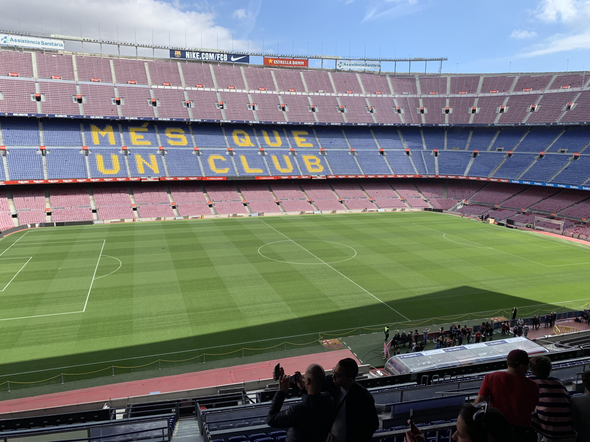
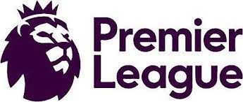

<!DOCTYPE html>
<html lang="en">
<head>
    <meta charset="UTF-8">
    <meta http-equiv="X-UA-Compatible" content="IE=edge">
    <meta name="viewport" content="width=device-width, initial-scale=1.0">
    <title>Document</title>
    <link rel="stylesheet" href="style.css">
    <link href="https://use.fontawesome.com/releases/v5.6.1/css/all.css" rel="stylesheet">
</head>
<body>
    <header>
        <div class="header-inner">
            <h1>soccer</h1>
            <ul>
                <li><a href="#">Premier</a></li>
                <li><a href="#">LaLiga Santander</a></li>
                <li><a href="#">Serie A</a></li>
                <li><a href="#">Ligue 1</a></li>
                <li><a href="#">Bundesliga</a></li>
                <li>|</li>
                <li><a href="#">favorite</a></li>
                <li>|</li>
                <li id="tw"><a href="#"><i class="fab fa-twitter-square"></i></a></li>
                <li id="instagram"><a href="#"><i class="fab fa-instagram"></i></a></li>
            </ul>
        </div>
    </header>

    <main>
        <div class="top-image">
            
        </div>

        <div class="main-contents">
            <div class="about">
                <h2>about</h2>
                <p>海外サッカーの魅力を伝えます。<br>
                日本でもJリーグにとどまらす、世界のサッカーも知って欲しい。<br>
                それぞれのリーグの特徴や魅力を伝えます。<br>
                少しでも興味を持ってくれる人が増えて欲しいと考えています。<br>
                是非、サッカーの面白さを世界に発信していきましょう。<br>
                koki
                </p>
            </div>

            <div class="league">
                <h2>league</h2>
                <ul>
                    <li>
                        <a href="#"></a>
                        <p>プレミアリーグ(イングランド)</p>
                    </li>
                    <li>
                        <a href="#"></a>
                        <p>ラ・リーガ（スペイン）</p>
                    </li>
                    <li>
                        <a href="#"></a>
                        <p>セリエA（イタリア）</p>
                    </li>
                    <li>
                        <a href="#"></a>
                        <p>リーグ1（フランス）</p>
                    </li>
                    <li>
                        <a href="#"></a>
                        <p>ブンデスリーガ（ドイツ）</p>
                    </li>
                </ul>
            </div>

            <div class="player">
                <h2>player</h2>
                <p>お気に入り選手の紹介です。<br>
                あなたの知っているサッカー選手はいるでしょうか。<br>
                現在の在籍チームとは違いますが、当時の選手としてご覧ください。<br>
                同じプレイヤーが好みな方はサッカー感も似ているかもしれませんね。<br>
                どんなプレイをするのかは、YouTubeで調べてみて下さい。<br>
                あなたにもきっと良さが伝わると思います。
                </p>
                <ul>
                    <li>
                        <a href="#"></a>
                        <p>ドログバ（イングランド）</p>
                    </li>
                    <li>
                        <a href="#"></a>
                        <p>セルヒオ・ラモス（スペイン）</p>
                    </li>
                    <li>
                        <a href="#"></a>
                        <p>アンドレア・ピルロ（イタリア）</p>
                    </li>
                    <li>
                        <a href="#"></a>
                        <p>ネイマール（フランス）</p>
                    </li>
                    <li>
                        <a href="#"></a>
                        <p>チアゴ・アルカンタラ(ドイツ)</p>
                    </li>
                </ul>
            </div>

            <div class="history">
                <div class="history-title">
                    <h2>history</h2>
                    <p>サッカーは、全世界であらゆる世代の人に親しまれているスポーツです。<br>
                        そんなサッカーの起源には諸説あり、その由来は未だ謎に包まれたまま。<br>
                        知っているようで実は知らないサッカーの歴史について紹介します。</p>
                </div>
                <div class="history-explanation">
                    
                    <div class="history-box">
                        <h2>- 中世イングランド発祥説 -</h2>
                        <p>1番有名な説がこの「イングランド発祥説」です。<br>
                        実はこの説、半分正解で半分不正解。<br>
                        8世紀頃のイングランドでは、戦争で敗れた敵軍の将軍の首を切り落とし、<br>
                        勝利を祝っていました。それが大衆の間に広まり、首の代わりにボールを<br>
                        使った「遊び」と「祭り」が誕生。その遊びがサッカーの起源となったといわれています。<br>
                        この遊びは、後にある理由から禁止されます（お祭りだった説の方で説明）が、<br>
                        17世紀の初めに再び合法となり、19世紀にはスポーツとしてルール化がスタート。<br>
                        その際に、手を使わないルールを支持する人々と、ボールを持てるルールを<br>
                        支持する人々とで意見が分れました。これがサッカーとラグビーの発祥といわれています。<br>
                        イングランドでルール化された近代サッカーは産業革命によってイギリスの船乗りや<br>
                        商人たちが世界中に広め、世界のさまざまな国でプレイされるようになりました。<br>
                        サッカーの原型のような遊びは他の国でも誕生していますが、ルールを定め、<br>
                        現在のような世界に認知される競技としたのは、イングランドといえるでしょう。</p>
                    </div>
                </div>

                <div class="history-explanation">
                    <div class="history-box">
                        <h2>- 中国発祥説 -</h2>
                        <p>サッカーの起源が中国、と聞くと、意外に思う方も少なくないでしょう。<br>
                            でも、実はこの説はFIFAの公式ホームページでサッカーの起源として<br>
                            紹介されている説であり、現在1番有力とされている説です。<br>
                            中国では、起元前300年以上前から蹴鞠という遊びがありました。<br>
                            そのルールは、12人1チームでゴールにあたる「球門」にボールを入れた<br>
                            回数を競うというもの。<br>
                            この蹴鞠（スーキー）という球技は、王や僧侶、将軍といった人物が<br>
                            兵士たちの運動能力を養うために考えられたものですが、これが娯楽（賭け事）となって、<br>
                            一般の人たちの間でも盛んに行われるようになったとされています。<br>
                            ちなみに、平安時代の日本の貴族の遊びであった蹴鞠も、蹴鞠（スーキー）由来といわれています。</p>
                    </div>
                    
                </div>
                <div class="history-explanation">
                    
                    <div class="history-box">
                        <h2>- イタリア発祥説 -</h2>
                        <p>サッカーの起源説の1つ、イタリア発祥説は、「カルチョ」という遊びがサッカーとなったというもの。<br>
                        カルチョはイタリア語で「蹴る」を意味する言葉ですが、<br>
                        決められたスペースと人数でボールを蹴って競い合うスポーツのこと。<br>
                        紀元前8世紀以前から楽しまれています。<br>
                        カルチョは貴族が楽しむ遊びであったため、貴族ではない一般の人々は観ることしかできませんでした。<br>
                            そのためカルチョは、競技を行う場所と選手の数、<br>
                            観客と選手とを明確に区別した初めてのものだともいわれています。</p>
                    </div>
                </div>
                <div class="history-explanation">
                    <div class="history-box">
                        <h2>- お祭りだった説 -</h2>
                        <p>サッカーの起源として有力な4つのうちの1つとされているのが、<br>
                            中世イングランドで首の代わりにボールを使った「祭り」、<br>
                            フットボール祭（シュローブタイド・フットボール）を起源とするもの。<br>
                            フットボール祭は、現在もイングランド・ダービーシャー州中部にある街<br>
                            アッシュボーンで、年に1度開催されているキリスト教のお祭りです。<br>                     
                            遊びの方は近代サッカーとなっていきましたが、フットボール祭のルールは当時のまま。<br>                       
                            街全体をフィールドとして、その真ん中を流れるヘンモア川を境に、<br>
                            誕生場所によって北部出身者の「アッパーズ」、南部出身者の「ダウナーズ」にチーム分けがなされ、<br>
                            両街の川岸にある製粉用水車の挽臼だった石をゴールとしてプレイヤーが<br>
                            それぞれのゴール石に3回タッチすると得点となります。<br>   
                            「殺さない」「ボールを隠さない」「教会の敷地には入らない」などがルールとして定められています。</p>
                    </div>
                    
                </div>

            </div>

            <div class="contact">
                <h2>contact</h2>
                <p>是非、インスタグラムやTwitterをフォローしてね♡<br>
                これからサッカーについての記事を載せていきます。<br>
                紹介して欲しい内容や気になる内容を気軽にお問合せ下さい。</p>

                <div>
                    <form action="confirm.php" method="post" name="form" onsubmit="return validate()">
                        <div>
                            <div>
                                <label>お名前<span>※必須</span></label>
                                <input type="text" name="name" placeholder="例）山田太郎" value="">
                            </div>
                            <div>
                                <label>ふりがな<span>※必須</span></label>
                                <input type="text" name="furigana" placeholder="例）やまだたろう" value="">
                            </div>
                            <div>
                                <label>メールアドレス<span>※必須</span></label>
                                <input type="text" name="email" placeholder="例）guest@example.com" value="">
                            </div>
                            <div>
                                <label>お問い合わせ内容<span>※必須</span></label>
                                <textarea name="content" rows="5" placeholder="お問合せ内容を入力"></textarea>
                            </div>
                        </div>
                        <button type="submit">確認画面へ</button>
                    </form>
                </div>

            </div>
        </div>
    </main>

    <footer>
        <div class="footer-inner">
            <ul>
                <li><a href="#">twitter</a></li>
                <li><a href="#">instagram</a></li>
                <li><a href="#">contact</a></li>
                <li>koki.kobayashi</li>
            </ul>
        </div>
    </footer>
</body>
</html>